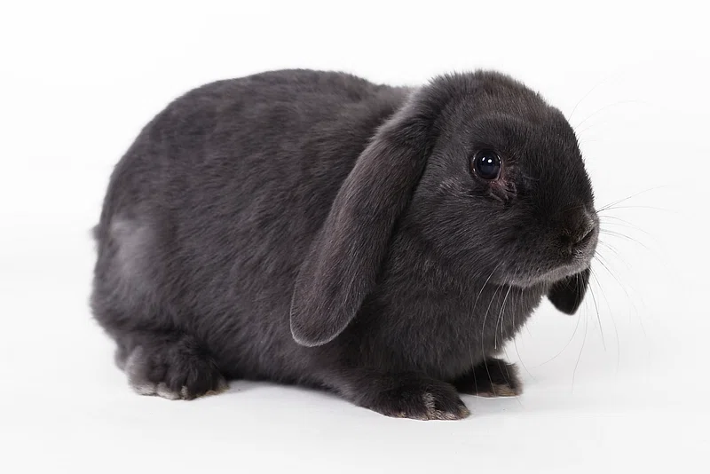

Image 3: WebP Image of a Cute Bunny
Media Description
This is an image of an adorable bunny with soft black fur and big floppy ears, just sitting down and chilling.
File Type Information
This type of file is called WebP (Web Picture) and it is expressed as .webp at the end of file names.
This is a more modern format that supports lossy and lossless compression, images, animations, and transparency.
It is also a raster file, but its main role is to make images smaller so they can load faster on the web.
Why I Chose This Image
I chose this image because I have relatives that own bunnys, and every time I get to see them they are most cuddly little animals.
I also admire how relaxed the bunny is and think more people should be like this.
Doing so would make our lives a lot less stressful and we would be able to enjoy life more.